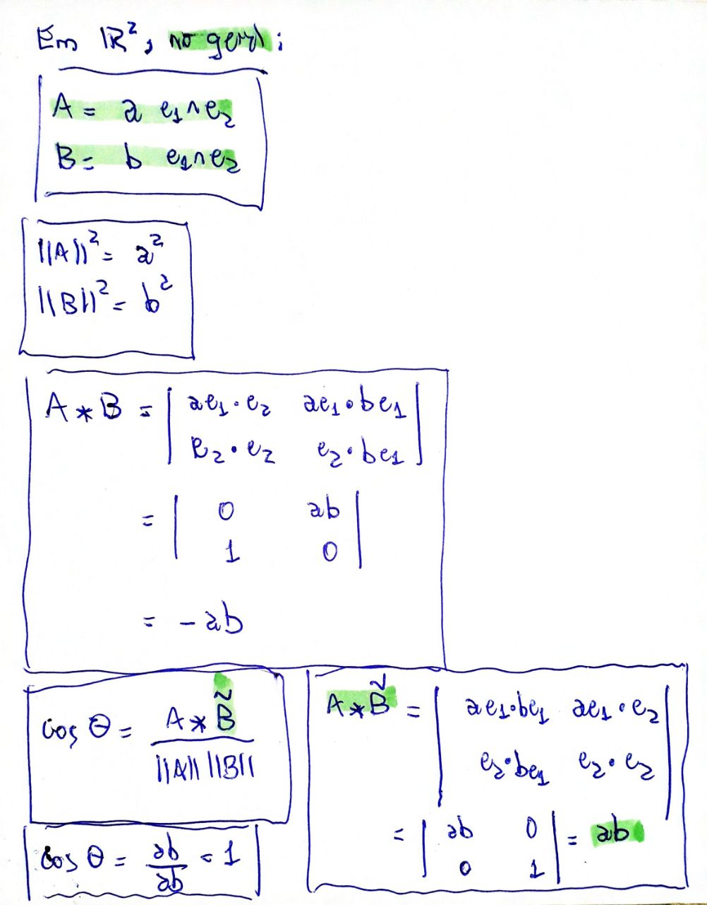
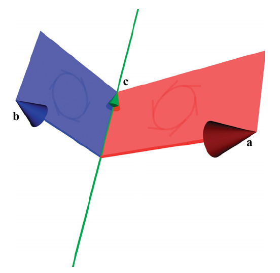
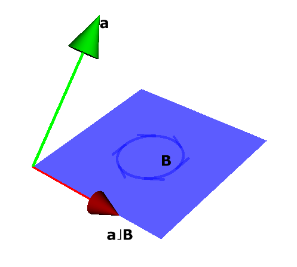

3 METRIC PRODUCTS OF SUBSPACES
% reverso % contração à esq % contração à dir
Resumo

3.1 SIZING UP SUBSPACES
3.1.1 METRICS, NORMS, AND ANGLES
Dada a definição de um produto interno, podemos definir
A norma de um vetor \(\mathbf{a}\) como
\[ || \mathbf{a} ||^2 = \mathbf{a} \cdot \mathbf{a} \]
O cosseno do ângulo entre dois vetores \(\mathbf{a}\) e \(\mathbf{b}\) como
\[ \cos \theta = \frac{\mathbf{a} \cdot \mathbf{b}}{|| \mathbf{a} ||\; ||\mathbf{b} ||} \]
Este capítulo generaliza o produto interno para blades e multivetores.
3.1.2 DEFINITION OF THE SCALAR PRODUCT \(*\)
Por enquanto, definir o produto interno de dois blades de mesma graduação.
O resultado sempre vai ser um escalar.
Generaliza o produto escalar de vetores (que, afinal, são 1-blades).
Considere
\[ \begin{aligned} \mathbf{A} &= \mathbf{a}_1 \wedge \mathbf{a}_2 \wedge \cdots \wedge \mathbf{a}_k \\ \mathbf{B} &= \mathbf{b}_1 \wedge \mathbf{b}_2 \wedge \cdots \wedge \mathbf{b}_k \end{aligned} \]
O produto escalar \(\mathbf{A} * \mathbf{B}\) é definido como

Exemplo:

3.1.3 THE SQUARED NORM OF A SUBSPACE
A norma de um blade \(\mathbf{A}\) usa o produto escalar entre \(\mathbf{A}\) e seu reverso \(\widetilde{\mathbf{A}}\):

Parecido com o que acontece com números complexos, onde o quadrado da norma é o produto entre o número complexo e seu conjugado:
\[ z\bar z = (a+bi)(a-bi) = a^2 -abi+abi -b^2i^2 = a^2 + b^2 = ||z||^2 \]
No geral, em \(\mathbb{R}^2\):
# Álgebra 2D
xy = (x, y) = symbols('x y', real=True)
g2 = Ga('e_1 e_2', g=[1, 1], coords=xy)
e1, e2 = g2.mv()
a1 = g2.mv('a_1', 'vector')
a2 = g2.mv('a_2', 'vector')
A = a1 ^ a2
show(fr'A = {A}')\[A = (a_1__x*a_2__y - a_1__y*a_2__x)*e_1^e_2\]
3.1.4 THE ANGLE BETWEEN SUBSPACES
O cosseno do ângulo entre dois blades \(\mathbf{A}\) e \(\mathbf{B}\) usa o produto escalar entre \(\mathbf{A}\) e o reverso \(\widetilde{\mathbf{B}}\):
\[ \cos \theta = \frac{\mathbf{A} * \widetilde{\mathbf{B}}}{||\mathbf{A}||\;||\mathbf{B}||} \]
De novo, temos a semelhança com números complexos, onde o produto \(z_1 \cdot \overline{z_2}\), tais que o argumento de \(z_1\) é \(\alpha\) e o argumento de \(z_2\) é \(\beta\), resulta em um número complexo \(z_3\) cujo argumento é \(\alpha - \beta\):


Em \(\mathbb{R}^2\), no geral, \(\mathbf{A} * \widetilde{\mathbf{B}} = ||\mathbf{A}||\;||\mathbf{B}||\), e o ângulo é sempre zero:

Em \(\mathbb{R}^3\):
\(\mathbf{A} = \mathbf{a}_1 \wedge \mathbf{a}_2\).
\(\mathbf{B} = \mathbf{b}_1 \wedge \mathbf{b}_2\).
Queremos calcular \(\mathbf{A} * \widetilde{\mathbf{B}}\).
O primeiro passo é achar um vetor \(\mathbf{c}\) que seja fator comum entre os dois blades.
Para facilitar, escolhemos \(\mathbf{c}\) com \(||\mathbf{c}|| = 1\).
Fatoramos \(\mathbf{A} = \mathbf{a} \wedge \mathbf{c}\), com \(\mathbf{a} \perp \mathbf{c}\).
Fatoramos \(\mathbf{B} = \mathbf{b} \wedge \mathbf{c}\), com \(\mathbf{b} \perp \mathbf{c}\).
Situação atual:

Daí,

Em \(\mathbb{R}^n, n > 3\) (caso geral):
Depois de separar todos os fatores comuns, o resultado é
Apenas escalares, e o ângulo é zero, ou
Apenas vetores, e o ângulo entre os blades é o ângulo entre estes vetores, ou
\(k\)-blades disjuntos (\(k \geq 2\)), e o cosseno é o produto dos cossenos das duas ou mais rotações em planos ortogonais necessárias para alinhar os blades originais. Se uma destas rotações for de \(90\) graus, o cosseno é zero.
Exemplo Dorst, p. 70 (em \(\mathbb{R}^4\)):
\[ \begin{aligned} A &= \mathbf{e}_{1} \wedge \mathbf{e}_{3} \\ B &= (\cos\alpha\;\mathbf{e}_{1} - \text{sen}\,\alpha\;\mathbf{e}_{2}) \wedge (\cos\beta\;\mathbf{e}_{3} - \text{sen}\,\beta\;\mathbf{e}_{4}) \end{aligned} \]

Como \(\mathbf{A} \wedge \mathbf{B}\) tem grau \(4\), com \(\mathbf{A}\) e \(\mathbf{B}\) ambos de grau \(2\), \(\mathbf{A}\) e \(\mathbf{B}\) são disjuntos.
O blade \(\mathbf{A}\) está no plano \(XZ\).
O blade \(\mathbf{B}\) é definido por dois vetores:
\[ \mathbf{B} = \mathbf{b}_1 \wedge \mathbf{b}_2 \]
onde
\(\mathbf{b}_1\) é o vetor \(\mathbf{e}_{1}\) rotacionado de \(\alpha\) no plano \(XY\);
\(\mathbf{b}_2\) é o vetor \(\mathbf{e}_{3}\) rotacionado de \(\beta\) no plano \(ZW\) (onde \(W\) é o eixo correspondente a \(\mathbf{e}_{4}\)).
Verifique que \(||\mathbf{A}|| = ||\mathbf{B}|| = 1\).
Calculando \(\mathbf{A} * \widetilde{\mathbf{B}}\):
\[ \begin{aligned} \mathbf{A} * \widetilde{\mathbf{B}} &= (\mathbf{e}_{1} \wedge \mathbf{e}_{3}) * (\cos\alpha\;\mathbf{e}_{1} - \text{sen}\,\alpha\;\mathbf{e}_{2}) \wedge (\cos\beta\;\mathbf{e}_{3} - \text{sen}\,\beta\;\mathbf{e}_{4}) \\ &= \begin{vmatrix} \mathbf{e}_{1} \cdot (\cos\alpha\;\mathbf{e}_{1} - \text{sen}\,\alpha\;\mathbf{e}_{2}) & \mathbf{e}_{1} \cdot (\cos\beta\;\mathbf{e}_{3} - \text{sen}\,\beta\;\mathbf{e}_{4}) \\ \mathbf{e}_{3} \cdot (\cos\alpha\;\mathbf{e}_{1} - \text{sen}\,\alpha\;\mathbf{e}_{2}) & \mathbf{e}_{3} \cdot (\cos\beta\;\mathbf{e}_{3} - \text{sen}\,\beta\;\mathbf{e}_{4}) \end{vmatrix} \\ &= \begin{vmatrix} \cos\alpha & 0 \\ 0 & \cos\beta \end{vmatrix} \\ &= \cos\alpha\;\cos\beta \end{aligned} \]
Se \(\alpha\) ou \(\beta\) for \(90\) graus, os blades \(\mathbf{A}\) e \(\mathbf{B}\) são considerados ortogonais.
Rotações em planos, não em torno de eixosVocê deve estar acostumado a pensar em uma rotação como algo que acontece em torno de um eixo.
Isto acontece por causa da nossa experiência no espaço tridimensional em que vivemos.
Mas isto é problemático, pois
Em \(\mathbb{R}^2\), o eixo de qualquer rotação não está contido no espaço!
Em \(\mathbb{R}^n\), com \(n \geq 4\), uma rotação pode se dar em torno de mais de um eixo ao mesmo tempo!
Em álgebra geométrica, o costume é pensar em rotações como ocorrendo em planos. Isto evita os problemas acima e trata rotações de maneira uniforme em qualquer número de dimensões.
Em todos os casos, o plano no qual se dá a rotação é representado por um bivetor.
Mais adiante, vamos abordar rotações em mais detalhes.
3.2 FROM SCALAR PRODUCT TO CONTRACTION
O produto escalar de dois blades de mesmo grau sempre resulta em um escalar, como já diz o nome.
Este escalar reflete as magnitudes e as direções relativas dos dois blades.
Agora, vamos generalizar a idéia para blades de graus diferentes.
O resultado é o produto interno.
Mas, em vez de definir o produto interno, alguns livros preferem trabalhar com as operações de contração à esquerda (\(\rfloor\)) e à direita (\(\lfloor\)).
As contrações generalizam o produto escalar: se \(\mathbf{A}\) e \(\mathbf{B}\) têm o mesmo grau, então
\[ \mathbf{A} \rfloor\mathbf{B} = \mathbf{A} \lfloor\mathbf{B} = \mathbf{A} * \mathbf{B} \]
3.2.1 IMPLICIT DEFINITION OF CONTRACTION \(\rfloor\)
Um primeiro exemplo:
\(\mathbf{B}\) é um \(2\)-blade;
\(\mathbf{a}\) é um vetor no mesmo plano que \(\mathbf{B}\).
A contração de \(\mathbf{a}\) sobre \(\mathbf{B}\), escrita como \(\mathbf{a} \rfloor\mathbf{B}\), é o vetor em vermelho na Figura 3.1.

Figura 3.1: Contração \(\mathbf{a} \rfloor\mathbf{B}\) Imagine que o vetor \(\mathbf{a}\) foi “contraído”, levando consigo, nesta contração, a dimensão de \(\mathbf{B}\) correspondente à direção de \(\mathbf{a}\).
O resultado é um vetor ortogonal a \(\mathbf{a}\), contido no plano de \(\mathbf{B}\).
Informalmente, \(\mathbf{a} \rfloor\mathbf{B}\) é o que resta em \(\mathbf{B}\) depois que \(\mathbf{a}\) é retirado.
Em breve, vamos ver como calcular a magnitude de \(\mathbf{a} \rfloor\mathbf{B}\).
Outro exemplo, onde agora \(\mathbf{a}\) não está no plano de \(\mathbf{B}\):
A Figura 3.2 mostra a situação.

Figura 3.2: Contração \(\mathbf{a} \rfloor\mathbf{B}\) O resultado continua sendo um vetor ortogonal a \(\mathbf{a}\), contido no plano de \(\mathbf{B}\), mas sua magnitude é menor do que na Figura 3.1.
Vamos ver, em breve, que apenas a componente de \(\mathbf{a}\) paralela a \(\mathbf{B}\) — i.e., a projeção de \(\mathbf{a}\) sobre o plano de \(\mathbf{B}\) — é levada em consideração no cálculo da contração \(\mathbf{a} \rfloor\mathbf{B}\). Isto condiz com a idéia de produto interno, cujo valor aumenta à medida que o ângulo entre dois objetos aumenta.
No caso extremo, se \(\mathbf{a}\) for ortogonal a \(\mathbf{B}\), a contração \(\mathbf{a} \rfloor\mathbf{B}\) será nula, como mostra a Figura 3.3. De novo, é o esperado, uma vez que o produto interno deve ser nulo quando os objetos são ortogonais.

Figura 3.3: Contração \(\mathbf{a} \rfloor\mathbf{B}= 0\)
3.2.2 COMPUTING THE CONTRACTION EXPLICITLY
- Graus dos operandos e do resultado.???